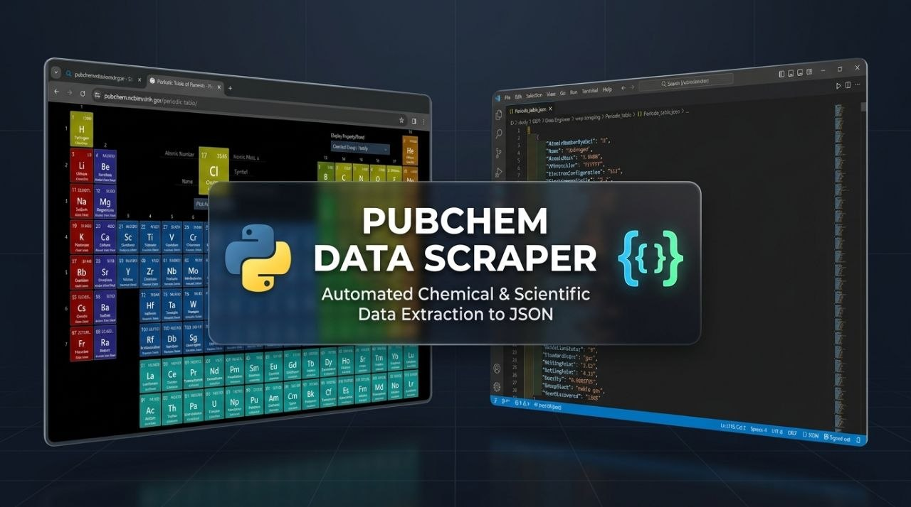

Data Engineer bridging business strategy with engineering rigor. Backed by an IT Management background and specialized DEPI & ITI training, I architect scalable, zero-downtime ETL/ELT pipelines and automated workflows. By eliminating data silos and creating a trusted Single Source of Truth, I transform organizations into fully Data-Driven ecosystems—building robust infrastructures that seamlessly power Data Analysis and Machine Learning.
Technologies, libraries, and frameworks I leverage to build robust solutions.
BeautifulSoup4, Requests, Scrapy, Selenium, Playwright, Anti-Bot Bypass, fake-useragent, lxml, Proxy Rotation.
PostgreSQL, SQL Server, Relational Schema Architecture (ERD), Query Optimization, Stored Procedures, Normalization.
Scikit-learn, TensorFlow, Support Vector Classifiers (SVC), Random Forest, Predictive Analytics.
Pandas, NumPy, SQLAlchemy, Automated ETL Pipelines, Data Cleansing, Schema Mapping, Data Warehousing.
Python (Data Scraping & Engineering), SQL (Complex Queries & Optimization), C++ (Algorithm Design).
Microsoft Azure (ADF, Data Lake), Git, GitHub, VS Code, Linux Shell, Cron Automation.
End-to-end data engineering solutions: from resilient web extraction and robust database architecture to automated cloud pipelines and predictive AI integration.
Custom scrapers & automated connectors built to extract large-scale data from dynamic, JS-rendered platforms. Equipped with anti-bot bypass mechanisms (proxy rotation, User-Agent masking) and REST API integration with 99.9% accuracy.
Designing clean relational database schemas (ERD), normalized tables, and optimized indexes. Creating robust SQL stored procedures and dimensional analytical models (Star/Snowflake Schemas) to support high-speed querying and zero data redundancy.
Constructing end-to-end data ingestion pipelines that extract, transform, and load large-scale data seamlessly across hybrid systems, backed by automated workflow orchestration, state management, and fault-tolerant error recovery.
Feeding structured extracted datasets into machine learning classification and regression models (predictive pricing engines, market forecasting) with automated feature engineering pipelines for live enterprise workflow integration.
Architecting cloud-native data infrastructure using the Microsoft Azure ecosystem. Deploying automated scraping and ETL workflows to Azure Data Factory, ADLS Gen2, and Azure Synapse for hands-off cloud updates.
Converting raw HTML, messy JSON, and unstructured text into clean, normalized datasets. Enforcing strict data governance, anomaly detection rules, and automated testing to eliminate data drift and ensure zero schema errors.
Verified professional credentials with certificate preview support.
Huawei ICT Academy
Networking technologies, computing infrastructure, and cloud data architecture.
Information Technology Institute (ITI)
Practical software engineering principles, advanced data development, and analytics.
Formal academic qualifications and specialized professional tracks.
Management Technology & Information System (MTIS)
Digital Egypt Pioneers Initiative (DEPI) — Ministry of Communications and Information Technology (MCIT)
Specialized training program focused on enterprise cloud data engineering, designing robust ETL/ELT pipelines, building modern data warehouses, and implementing cloud data architectures within the Microsoft Azure ecosystem.
Engineered scripts for dynamic extractions, anti-bot resistance, and business intelligence.
Technical Overview: Automated scraping engine engineered to parse hundreds of paginated property listings on AqarMap, extracting granular real estate metrics (prices, area in sq.m, geographic location, seller contact details, and listing dates) while evading anti-bot detection through dynamic request header rotation.
Business Value: Delivers a real-time, updated market database for real estate investment firms and valuation agencies to drive precise pricing strategies and assess per-square-meter market averages based on live market data.
Real-World Application: Powers dynamic analytics dashboards and automated deal-finding systems to capture below-market property investments immediately upon listing.
Technical Overview: Dynamic data extraction engine utilizing Selenium / Playwright to navigate Google Maps' infinite scrolling mechanism. Automatically harvests phone numbers, addresses, ratings, operating hours, and websites for beauty clinics and medical centers across targeted geographic areas.
Business Value: Equips cosmetics brands and medical equipment suppliers with highly targeted B2B lead databases for direct client outreach, eliminating tedious manual prospecting.
Real-World Application: Feeds sales teams with structured datasets for targeted cold calling and automated WhatsApp marketing campaigns, significantly driving up deal conversion rates.
Technical Overview: Advanced recurring scraping system engineered with anti-bot evasion algorithms to bypass protections on major e-commerce platforms. Continuously tracks, cleans, and updates prices, technical specs, and stock availability for thousands of products, storing them directly into a relational database.
Business Value: Empowers e-commerce store owners and dynamic pricing managers with real-time competitor price intelligence, enabling automated price adjustments to maximize profit margins.
Real-World Application: Triggers instant price-change alerts and side-by-side product catalog comparisons with zero manual effort.

Technical Overview: Highly specialized extraction utility engineered to parse complex data structures within the global PubChem database. Harvests chemical and physical properties of elements and compounds with high precision and automated deduplication.
Business Value: Saves researchers, laboratories, and pharmaceutical R&D centers hundreds of operational hours by converting thousands of unstructured scientific publications into clean JSON/CSV datasets.
Real-World Application: Prepares clean, structured datasets to feed AI/ML models for molecular property prediction and drug candidate analysis.